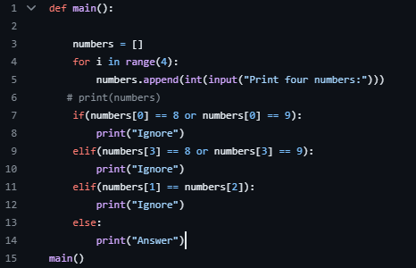

Number Comparison
 Here at the Concerned Citizens of Commerce we have noted that telemarketers like to use seven-digit phone numbers where the last four digits have three properties. Looking just at the last four digits, these properties are:
the first of these four digits is an 8 or 9
the last digit is an 8 or 9
the second and third digits are the same.
For example, if the last four digits of the telephone number are 8229, 8338, or 9008, these are telemarketer numbers. Write a program to decide if a telephone number is a telemarketer number or not, based on the last four digits.